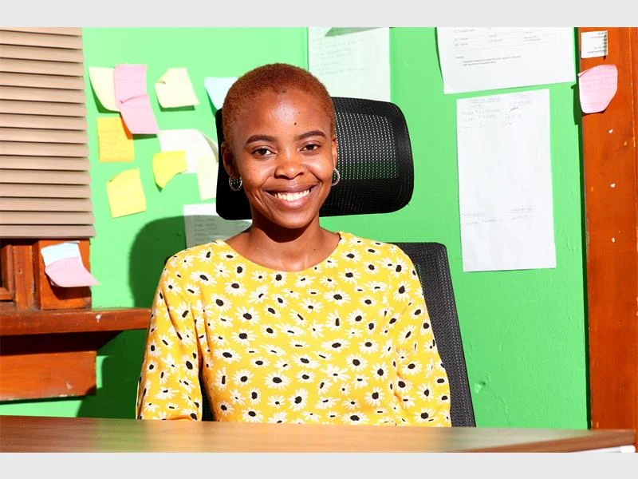

Planning to donate?
Check what the shelter needs before buying items. Arrange a delivery time and ask who will receive your donation.
Plan your donation ↗Information for supporters, community stories and published reporting about the shelter.
COMMUNITY NOTICES
Check what the shelter needs before buying items. Arrange a delivery time and ask who will receive your donation.
Plan your donation ↗Speak to HUP about your idea, group size and possible dates before organising your visit.
Contact the team ↗FROM THE PRESS ARCHIVE
The articles below were published in 2022 and describe the work at that time.

21 OCTOBER 2022 · REKORD
HUP founder Buang Mfumane discusses employment, capabilities and self-reliance.
Read the article
5 OCTOBER 2022 · REKORD
Social worker Zanele Mngadi discusses why people become homeless and how residents can work with organisations providing support.
Read the article
10 AUGUST 2022 · REKORD
Reporting on temporary shelter, counselling, employment guidance and rehabilitation referrals.
Read the article
20 JULY 2022 · REKORD
A park cleanup, meals and clothing donations in Gezina.
See the outreach